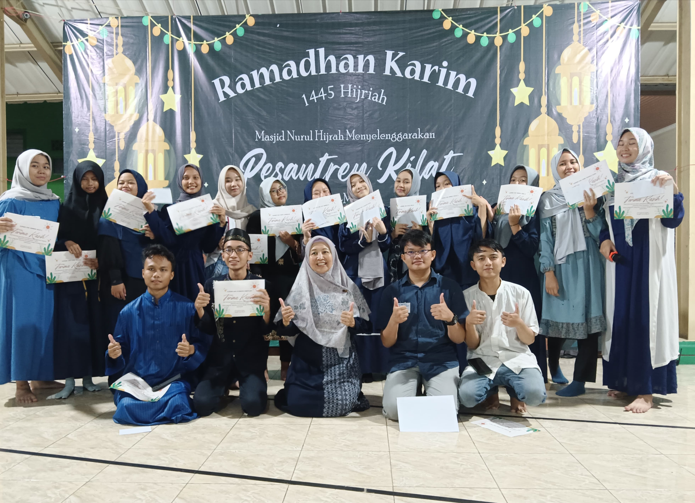

Remaja Masjid Nurul Hijrah
Pemuda hari ini adalah pemimpin esok hari
Tentang Kami
RISMAN adalah wadah pemuda untuk mengembangkan keimanan, ilmu, dan kepedulian sosial. Kami aktif mengadakan kegiatan keagamaan dan sosial demi membentuk generasi muda yang bertaqwa dan berakhlak mulia.
MANFAAT MENJADI ANGGOTA RISMAN
- Menambah wawasan keislaman
- Melatih kepemimpinan dan tanggung jawab
- Meningkatkan kedisiplinan dan manajemen waktu
- Mendapat teman yang positif dan satu visi
- Terbiasa dalam kegiatan sosial dan dakwah
- Menjadi panutan di lingkungan sekitar
- Meningkatkan skill public speaking dan komunikasi
- Menumbuhkan rasa peduli dan empati
- Mendapat pengalaman organisasi
- Menjaga diri dari pergaulan bebas
- Belajar kerja tim dan gotong royong
- Memperluas relasi dan jaringan komunitas positif
TUMBUH BERSAMA RISMAN
.jpeg)
Maulid Nabi
Peringatan Maulid Nabi Muhammad SAW yang penuh makna.
.jpeg)
Ngabuburit Ceria
Bukan sekadar organisasi, tapi momen seru bareng sahabat masjid!
.jpeg)
Takjil On The Road Ramadhan
Bagi-bagi takjil ke warga sekitar yang membutuhkan.
.jpeg)
BERLIAN
Pawai Obor, Lomba Ramadhan, dan Sanlat di bulan Ramadhan.
.jpeg)
Pelatihan MC & Public Speaking
Latihan jadi MC dan pembicara yang percaya diri di depan umum.
.jpeg)
Kolaborasi
Nggak cuma rame, tapi juga bermanfaat.